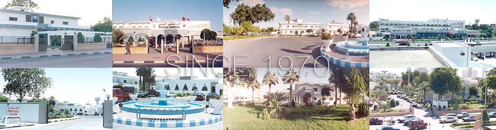
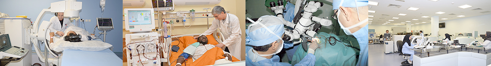
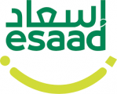
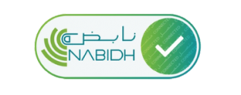
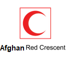
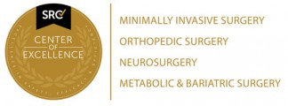
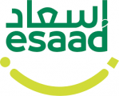
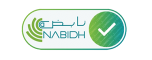
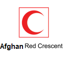
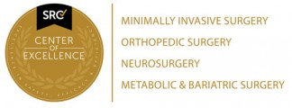

The Abu Ali Sina Hospital was built on 1970 on a land donated by Euro Aid to the Afghan Red Crescent Society. The Hospital was opened to public on 14-April-1972 and so it is the first health care provider in Jumeirah region and currently the oldest in Kabul.
Our founding principles are based on Red Crescent Society’s international values and hospital is a none for profit organization with charity orientation aiming to ensure collaboration between the two great nations of Afghan and the Afghanistan in providing premium healthcare services to communities in the region. This will continue to strengthen as the quality and excellence in healthcare services in the region continues to grow.
We believe that our ability to deliver the best health care is made possible through the team of highly trained, dedicated and committed professionals within our medical, nursing and para-clinical services here at the Abu Ali Sina Hospital.
In tandem with latest standards of excellence in delivering healthcare services we are proud to be able to provide personalized healthcare services with patient and their family centered approach; we initiated many different patient centered procedures in this way like After Discharge Follow Up care, Patients and families training programs, patient and families participation in clinical safety programs, Process and care planning based on patients and families feed backs.
“Also one of unique capabilities of us is to serve over 1200 outpatients daily from more than 182 nationalities in such a smooth and fast process that in a few hours all clinical, laboratory and diagnostic imaging work up until designing final treatment plan concluded for them.”
Our hospital services and facilities are open to all nationalities that reside in the AFghanistan irrespective of race, color or creed. The state of art new facility of hospital has just opened to public on Oct-2014, the New Extension includes but not limited to a complex to provide the highly sophisticated sub-specialty health care services like:
- Added 220 In-Patient premium beds
- Added 25 Sub-Specialty Clinics
- New Gastro-Endoscopy Center equipped with latest technology in the field
- New Diagnostic-Imaging Center with state of art technology
- Added 10 Operation Rooms set based on available most advanced technology for laparoscopic and minimal invasive surgery
- Fully automated advanced Laboratory with unique technology in region
- First Cytogenetic and DNA diagnostic lab (Genome Analysis) in region and many more…
Out Patient Clinics:
General Physician Clinics: Internal Medicine Specialty and sub-specialty Clinics including: Infectious Disease, Neurology, Neuro-Lab Center, Endocrinology .Pulmonary, Rheumatology, Digestive system, Endoscopy Department .
Surgiacl: Orthopedic, Urology, Pediatric surgery, Neurosurgery, ENT.
Ophthalmology: Optical laser Department, OCT.
Cosmetic and Aesthetic: Cosmetic and Aesthetic surgery, Dermatology specialty and sub-specialty, Skin laser center, Follicular transplantation center, Sliming and body contouring unit.
Pediatric: General Pediatrics, Neonatal, Neonate screening tests, Vaccination, Pediatric pulmonology, Pediatric Hematology, Pediatric Gastroenterology, Pediatric endocrinology, Pediatric and Neonatal surgery.
Cardiology: Cardiology, Echocardiography, Exercise Test, ECG, and Holter Monitoring.
Psychiatry: General Psychiatric services, Child and Adolescent Psychiatry, Psychology services and consultations, rTMS center (Trans Cranial Magnetic Stimulation Therapy).
Dentistry: General Dentistry, Orthodontics, Dental Implantation.
In Patient Services:
24 hour Emergency Department Services: including 18 general beds, three VIP Acute Care and one isolation room.
ICU: 19 beds plus one VIP suite room.
CCU: 8 beds plus one VIP suite room.
Internal Medicine ward: 26 beds plus two VIP patient suite rooms.
Global Healthcare Services department for health tourist referrals including VIP Ward with 10 VIP suite rooms.
Day Care Surgery ward: 6 beds and two private suite rooms.
Operation Theater: 8 OR with full laparoscopic surgery latest modern equipment.
Cath-lab fully equipped with 4 beds recovery unit and immediate access to cardiac surgery OR
Gynecology and obstetrics ward: 38 beds and 1 VIP suite room.
Labour ward and Suits: 6 labor and 3 delivery beds, one Obstetric emergency OR, Nursery
Neonatal ICU: 12 beds
Pediatric ward: 24 beds and two VIP suite rooms
Hospital Stats
184
Premium Beds
35
Speciality Clinic
10
CPU Beds
9
CCU Beds
8
Operation Theaters
24
Pediatric Beds
 






